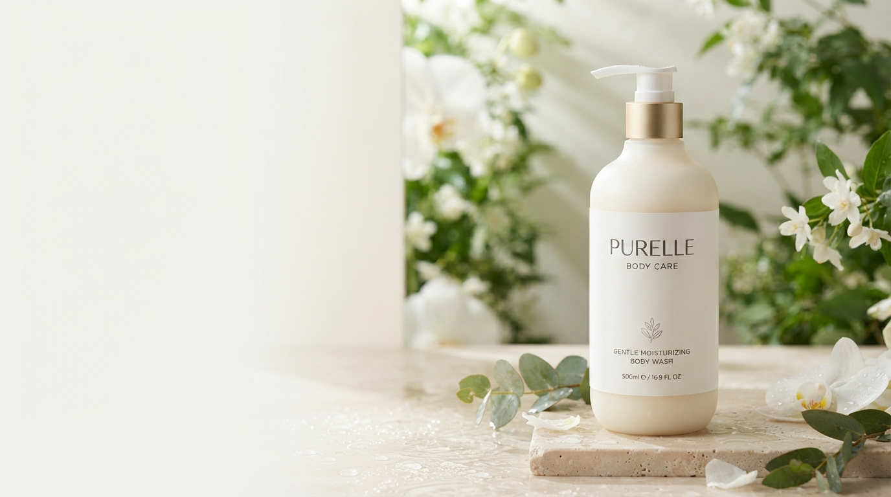
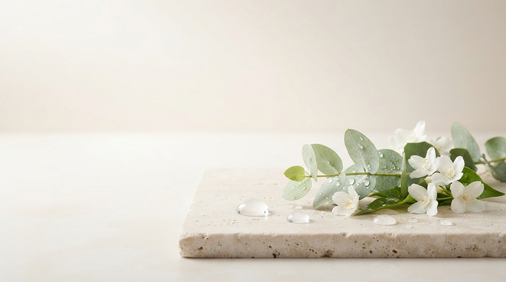
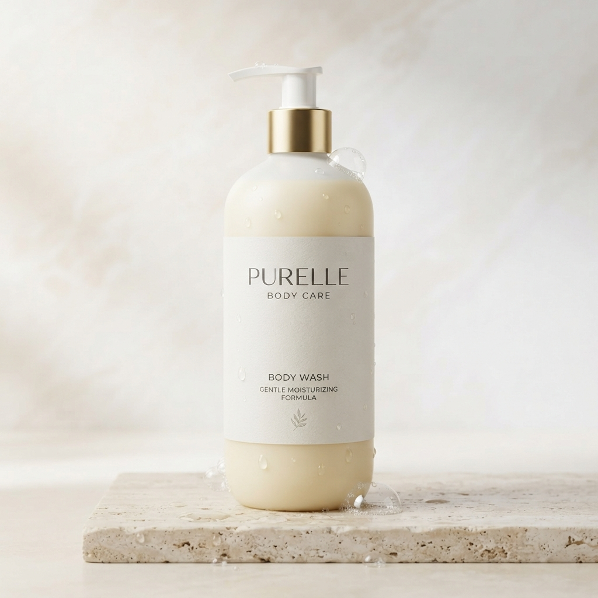
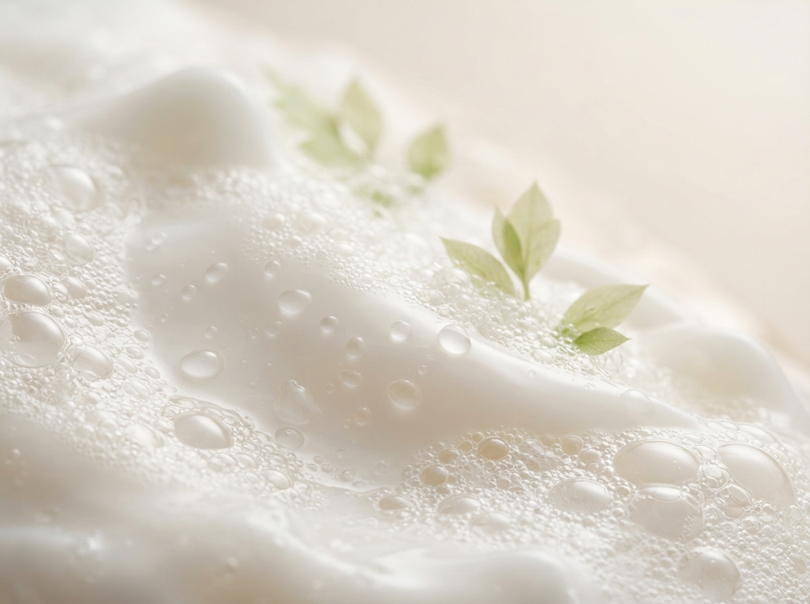
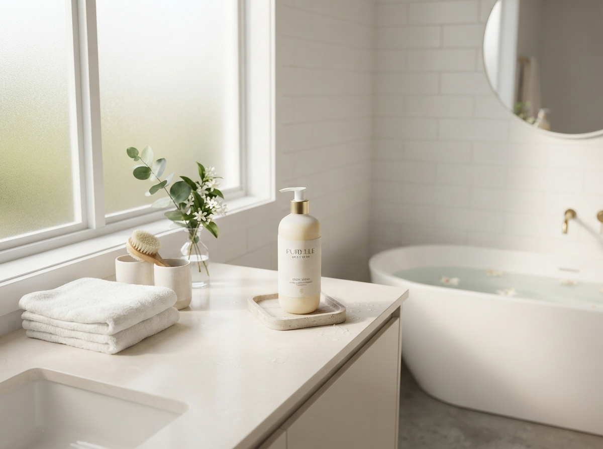

ที่ PURELLE BODY CARE เราเชื่อว่าการอาบน้ำไม่ใช่เพียงแค่ขั้นตอนการทำความสะอาดร่างกาย แต่คือ "ช่วงเวลาแห่งการดูแลตัวเอง" ที่ดีที่สุดในแต่ละวัน เราจึงตั้งใจรังสรรค์ผลิตภัณฑ์ดูแลผิวกายที่ผสานความอ่อนโยนและกลิ่นหอมละมุน เพื่อเปลี่ยนกิจวัตรประจำวันอันเร่งรีบให้กลายเป็นประสบการณ์สุดพรีเมียม ให้คุณได้หยุดพัก ชำระล้างความเหนื่อยล้า และกลับมาโอบกอดตัวเองอย่างแท้จริงในทุกๆ วัน

เรื่องราวของแบรนด์ (Brand Story)

PURELLE Body Wash: ครีมอาบน้ำที่เข้าใจผิวคุณ
เปิดประสบการณ์การอาบน้ำที่เหนือกว่าด้วยครีมอาบน้ำ PURELLE ที่ออกแบบมาเพื่อการทำความสะอาดอย่างหมดจดพร้อมถนอมผิวอย่างอ่อนโยน ให้ทุกสัมผัสของฟองนุ่มโอบกอดผิวคุณ มอบความรู้สึกสะอาด สดชื่น และเบาสบาย คืนความสมดุลให้ผิวกายพร้อมรับวันใหม่และผ่อนคลายอย่างเต็มที่ก่อนเข้านอน
สอบถามข้อมูลผลิตภัณฑ์
จุดเด่นของผลิตภัณฑ์ (Key Highlights)
- อ่อนโยนต่อผิว: ทำความสะอาดผิวอย่างหมดจด โดยไม่ทำร้ายความชุ่มชื้นตามธรรมชาติของผิว
- กลิ่นหอมผ่อนคลาย: รังสรรค์กลิ่นหอมสไตล์พรีเมียมที่ช่วยสร้างบรรยากาศแห่งการพักผ่อนขณะอาบน้ำ
- สัมผัสเบาสบาย ล้างออกง่าย: ฟองเนียนนุ่ม ล้างออกได้ง่าย ไม่ทิ้งคราบลื่นเหนอะหนะ หรือทำให้ผิวแห้งตึงหลังอาบ
- เหมาะสำหรับทุกวัน: ออกแบบมาให้มีความสมดุล เหมาะสำหรับการใช้งานในชีวิตประจำวันอย่างต่อเนื่อง
สัมผัสความสุนทรีย์จากธรรมชาติ
ครีมอาบน้ำ PURELLE โดดเด่นด้วยเนื้อสัมผัสแบบ [รอข้อมูลจริง: เช่น เจลใส / ครีมน้ำนม] ที่ให้ฟองละเอียดนุ่มละมุน ผสานคุณค่าจาก [รอข้อมูลจริง: ระบุสารสกัดหลัก เช่น สารสกัดจากธรรมชาติ / ว่านหางจระเข้ / วิตามินอี] ที่ช่วยทำความสะอาดผิวอย่างใส่ใจ พร้อมมอบกลิ่นหอมแนว [รอข้อมูลจริง: เช่น Floral / Woody / Fresh Citrus] ซึ่งคัดสรรมาอย่างพิถีพิถันเพื่อมอบความรู้สึกสะอาดและผ่อนคลายยาวนาน

วิธีใช้ผลิตภัณฑ์
ปั๊มครีมอาบน้ำ PURELLE ลงบนฝ่ามือหรือฟองน้ำทำความสะอาด ลูบไล้ให้เกิดฟองนุ่มทั่วผิวกายที่เปียก แล้วล้างออกด้วยน้ำสะอาด สามารถใช้ทำความสะอาดผิวกายเป็นประจำทุกวัน เช้า-เย็น
บรรยากาศแห่งการผ่อนคลาย

คำถามที่พบบ่อย (FAQ)
Q: ผลิตภัณฑ์นี้เหมาะกับสภาพผิวแบบไหน?
A: PURELLE ออกแบบมาให้อ่อนโยน มีค่าความสมดุลที่เหมาะสม จึงสามารถใช้ได้กับทุกสภาพผิวสำหรับการทำความสะอาดในทุกๆ วัน
Q: ครีมอาบน้ำล้างออกยาก หรือทำให้ผิวรู้สึกแห้งตึงหลังอาบหรือไม่?
A: เนื้อผลิตภัณฑ์ของเราถูกพัฒนามาให้ล้างออกง่าย ทำความสะอาดได้หมดจด โดยไม่ทิ้งสัมผัสลื่นเหนอะหนะ และไม่ทำให้ผิวแห้งตึงหลังเช็ดตัว
Q: ผลิตภัณฑ์มีส่วนผสมที่อาจก่อให้เกิดการระคายเคืองหรือไม่?
A: ผลิตภัณฑ์ของเราปราศจากส่วนผสมของ [รอข้อมูลจริง: ระบุสารที่ไม่มี เช่น พาราเบน, ซิลิโคน, แอลกอฮอล์] เพื่อคงความอ่อนโยนต่อผิวของคุณให้มากที่สุด
Q: ปัจจุบันมีให้เลือกทั้งหมดกี่กลิ่น?
A: ตอนนี้ PURELLE มีให้เลือกทั้งหมด [รอข้อมูลจริง: ระบุจำนวน] กลิ่น ซึ่งแต่ละกลิ่นถูกออกแบบมาเพื่อมอบความรู้สึกผ่อนคลายในสไตล์ที่แตกต่างกัน